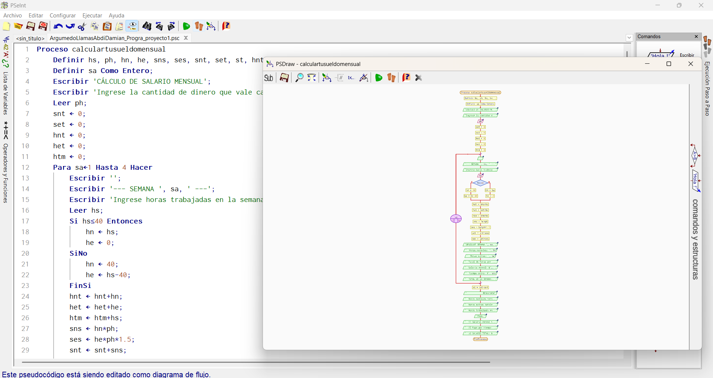

03
▶ MÓDULO TRES · 2 MATERIAS
⚙️ Desarrollo de Sistemas
// Descripción del Módulo
El módulo de Desarrollo de Sistemas cubre el ciclo completo de funcionamiento del software.
Los estudiantes aprenderán a analizar, diseñar y construir sistemas de información,
así como los fundamentos de la programación.

MATERIA 3.1
🗄️ Sistemas de Información
Análisis y diseño de sistemas de información. Modelado de datos,
diagramas de flujo, casos de uso y metodologías de desarrollo de software.

MATERIA 3.2
💻 Programación
Fundamentos de programación, algoritmos y estructuras de datos. Desarrollo
de programas con lenguajes de programación modernos en pseudocodigo y c++.
